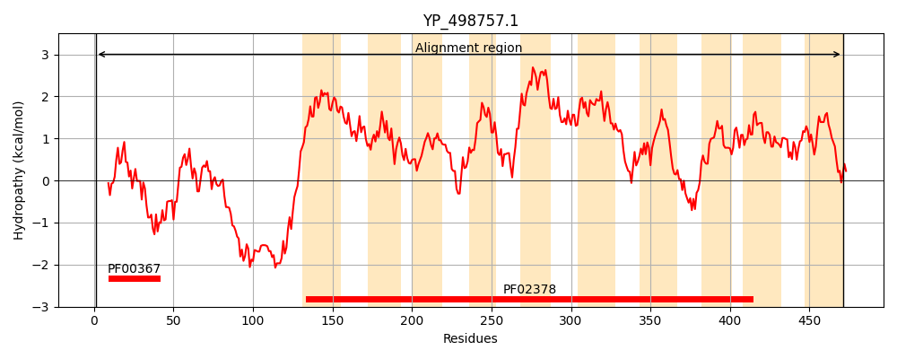
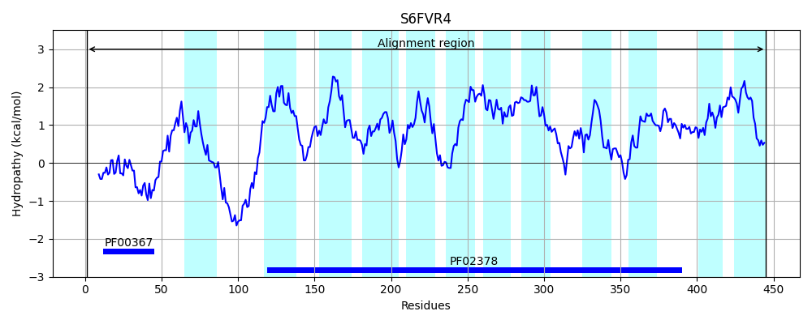
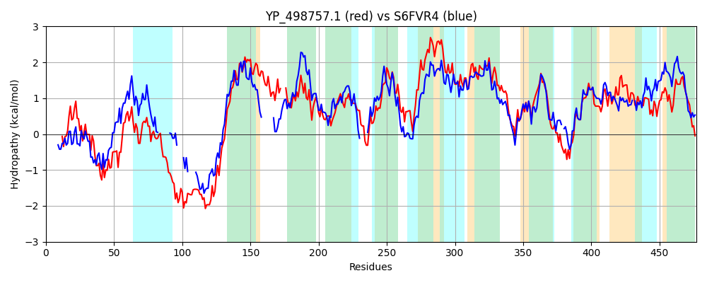

Hit Accession: S6FVR4
Hit TCID: 4.A.1.2.17
Hit Description: gnl|BL_ORD_ID|20060 gnl|TC-DB|S6FVR4|4.A.1.2.17 PTS system N-acetylmuramic acid-specific EIIBC component OS=Bacillus velezensis UCMB5033 OX=1338518 GN=murP PE=4 SV=1
Mach Len: 477
e:0.000000
Query TMS Count : 10
Hit TMS Count: 12
TMS-Overlap Score: 5.750000
Predicted Substrates:CHEBI:47966;aldehydo-N-acetylmuramic acid
BLAST Alignment:
Score: 962 , Bit scores: 375 bits, E-value: 2.2e-126, Alignment length: 477, Percentage identity: 45
Query: 1 MTKE---QQLAERIIAAVGGMDNIDSVMNCMTRVRIKVLDENKVDDQELRHIDGVMGVIHDERIQVVVGPGTVNKVANHMAELSGVKLGDPIPHHHNDSEKMDYKSYAADKAKANKEAHKAKQKNGKLNKVLKSIANIFIPLIPAFIGAGLIGGIAAVLSNLMVAGYISGAWI---TQLITVFNVIKDGMLAYLAIFTGINAAKEFGATPGLGGVIGGTTLLTGIAGKNILMNVFTGEPLQPGQGGIIGVIFAVWILSIVEKRLHKIVPNAIDIIVTPTIALLIVGLLTIFIFMPLAGFVSDSLVSVVNGIISIGGVFSGFIIGASFLPLVMLGLHHIFTPIHIEMINQSGATYLLPIAAMAGAGQVGAALALWVRCKRNTTLRNTLKGALPVGFLGIGEPLIYGVTLPLGRPFLTACIGGGIGGAVIGGIGHIGAKAIGPSGVSLLPLISDNMYLGYIAGLLAAYAGGFVCTYLFG 471
M+KE Q LA+ I+ GG NI +CMTR+RI LD++K D + L+ +DGV+GV+ E +Q+++G G VN VA+ A+L +P N +D K +A + K+A ++ + L+ I++IFIPLIPA I +GLI GI + I W+ +Q+ + VI G+ AYL + GINAAKEFG TP +GG+ G L IA ++ GE L PG+GG+IGV+FA ++ E+ + K V +IDIIVTPT++LLI GL+T +F+P GF+SD + S + ++++GGV SGF++GASFLPLV+ GLH TP+H+E+I G LLPI AM GAGQVGAA A++++ K+ +L+ + G LP G LGIGEPLI+GVTLPLGRPFLTAC+G GIGGA + +IG SG+ L L+ + YI GL +YA GFV TY FG
Sbjct: 1 MSKEAFYQSLAKDILDNCGGSSNISGFTHCMTRLRITPLDQDKTDIEALKQLDGVIGVVEAETLQIILGTGVVNHVADAFAKL--------VPSGKN----IDLK-----EAASRKKADLNRKNTTPIKLFLRKISSIFIPLIPALIASGLITGITKAV--------IQAGWLPKESQIALILTVIGSGLFAYLGVLVGINAAKEFGGTPAMGGLAGILILNPEIANISLF-----GENLLPGRGGLIGVLFAAVFIAYTERFIRKYVHQSIDIIVTPTLSLLITGLVTYLVFIPAGGFISDLITSGLLSLLNVGGVLSGFVLGASFLPLVVTGLHQGLTPVHLELIRSIGDDPLLPILAMGGAGQVGAAFAIFMKTKK-ASLKRAIGGGLPSGLLGIGEPLIFGVTLPLGRPFLTACLGAGIGGAFQAHF-QVATFSIGVSGLPLSFLVQPAQIVLYIIGLFISYAAGFVFTYAFG 445 | Protein Hydropathy Plots: |
|---|
|  |  |
Pairwise Alignment-Hydropathy Plot:
|
|---|
|  |